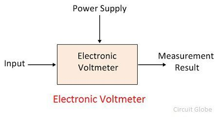

Voltmeter
What is a Voltmeter?
The voltmeter which uses the amplifier for increases their sensitivity is known as the electronic voltmeter. It is used for measuring the voltages of both the AC and DC devices. The electronic voltmeter gives the accurate reading because of high input resistance.
The moving coil voltmeter is not able to detect the low voltages. The electronic voltmeter overcomes this problem. The electronic voltmeter has high input impedance because of which it detects the signals of very weak strength, hence gives the accurate reading. The high impedance means the circuit opposes the input supply.
The electronic voltmeter uses the transistor or vacuum tube. The transistor type voltmeter (TVM) has resistance because of which it cannot measure the current. And the vacuum voltmeter (VVM) has low resistance. Hence it is used for measuring the current.
Consult your owner’s manual on the particular model of meter you own for details on measuring current.
Working of Electronic Voltmeter
The magnitude of the measurand voltage is directly proportional to the deflection of the pointer. The pointer is fixed on the calibrated scale. The point at which the pointer deflects indicates the magnitude of the input voltage.
n moving coil voltmeter the large power is drawn from the measurand circuit because of which the error occurs in their reading. This problem is overcome in the electronic voltmeter.
In electronic voltmeter, the pointer is deflected by taking the supply from the auxiliary amplifier circuit. The output voltages of the amplifier circuit are similar to the voltage of the test circuit. The extra power is not passing through the deflector because of which the meter gives the accurate reading.